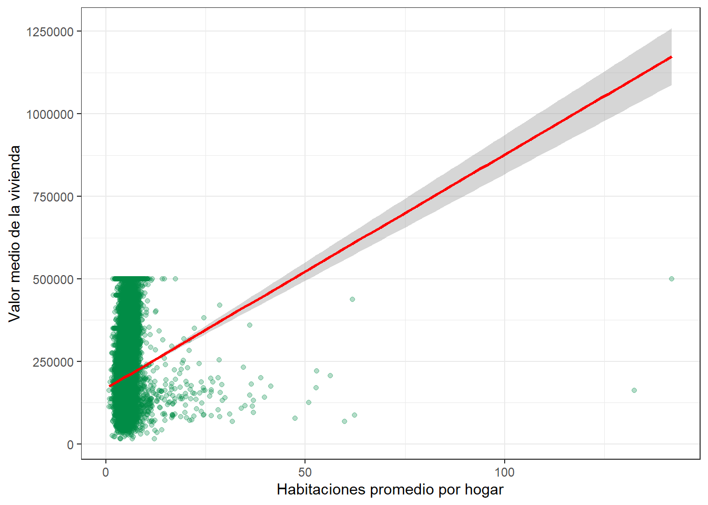
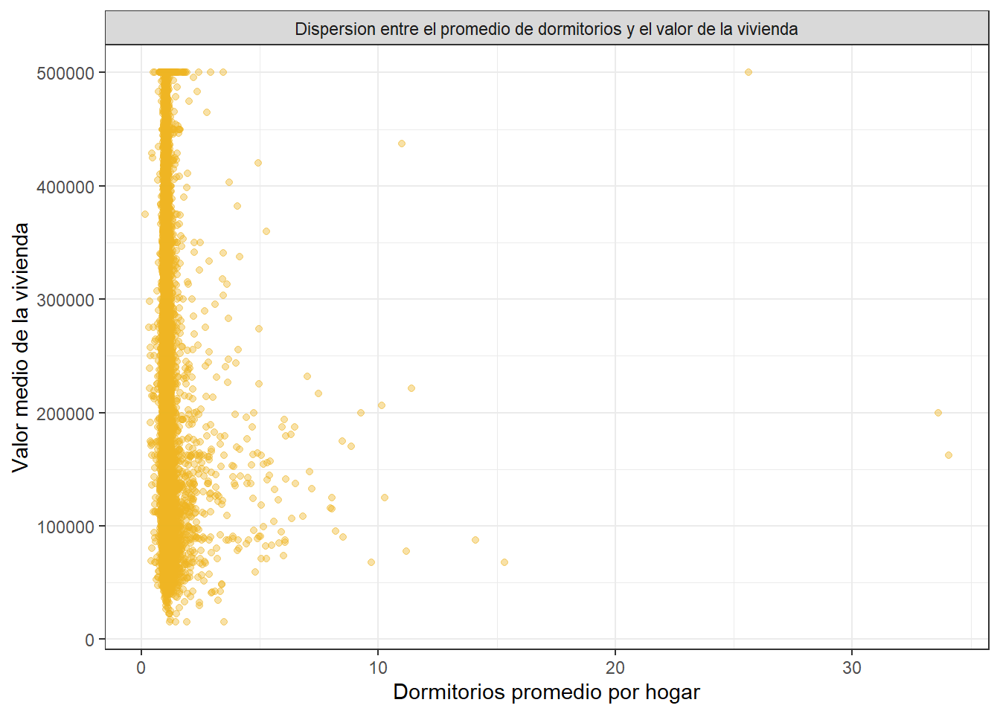
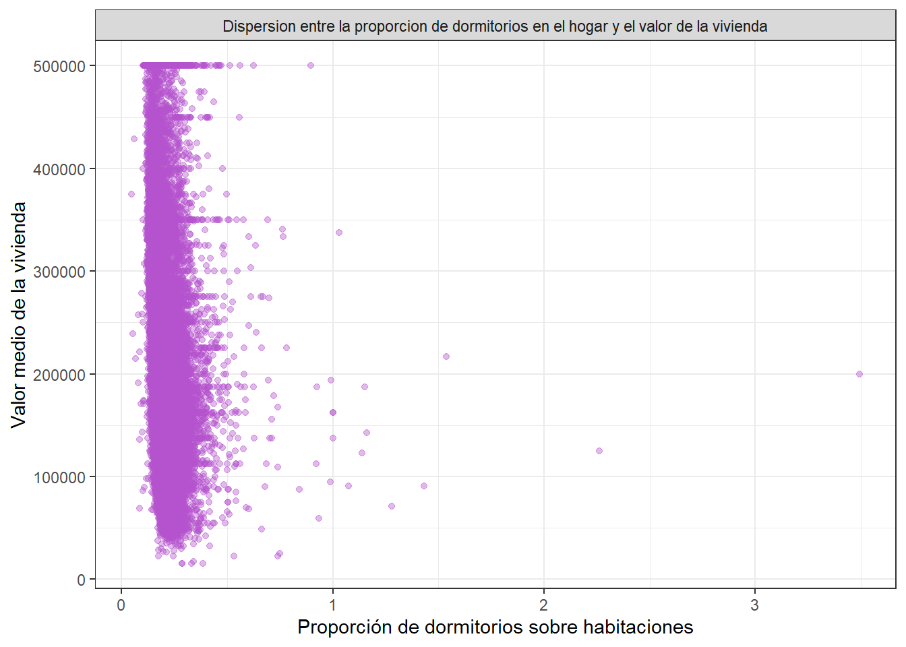
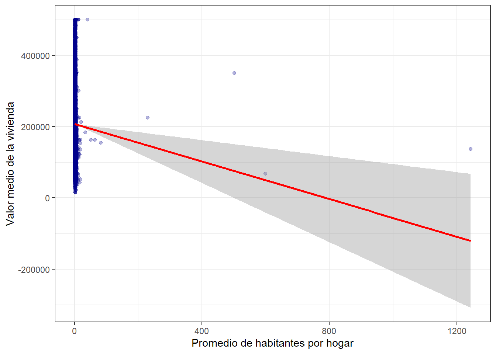
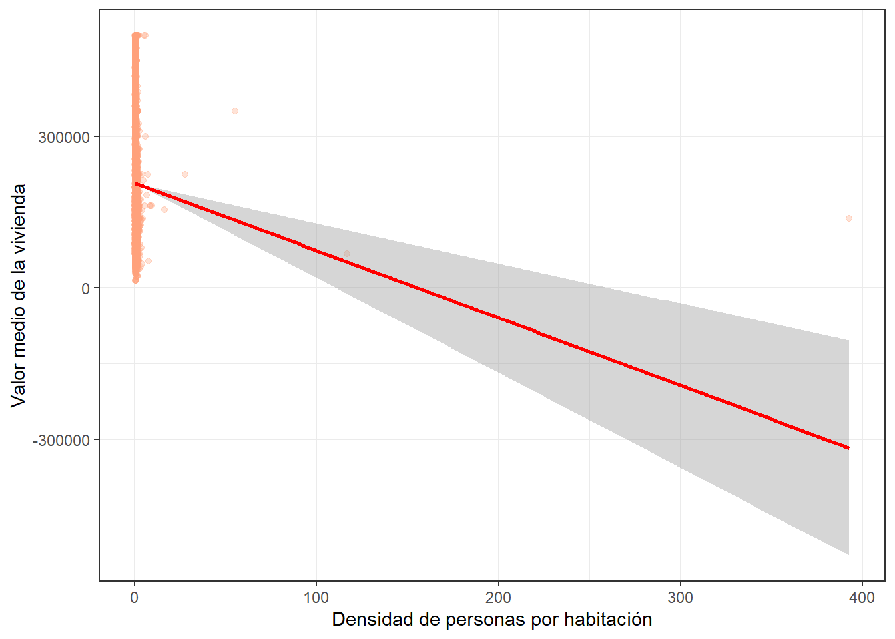
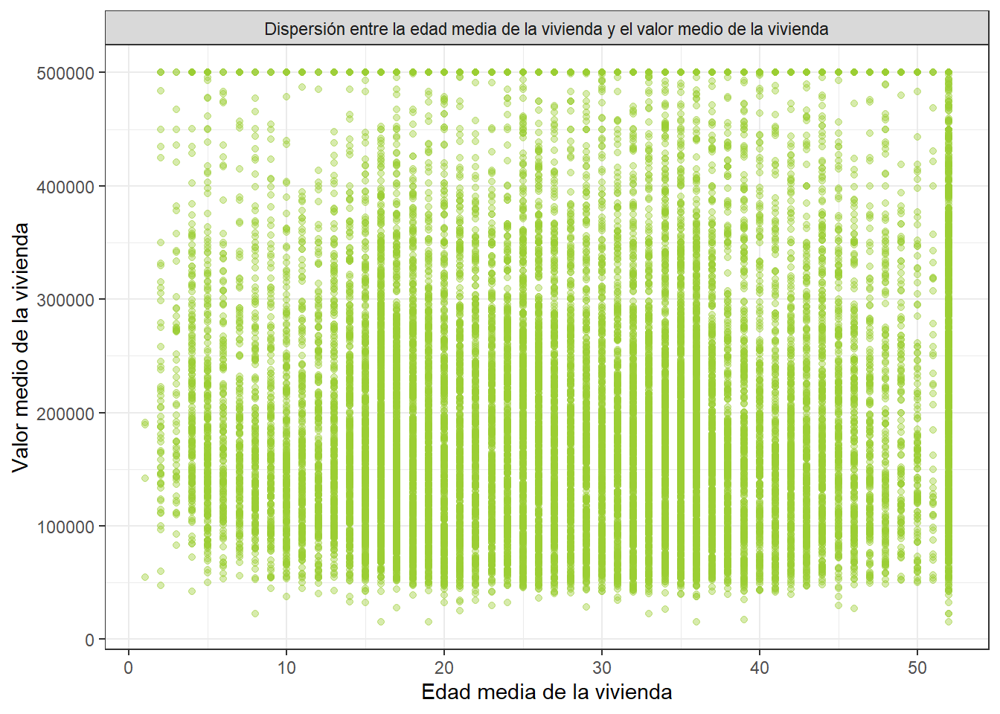
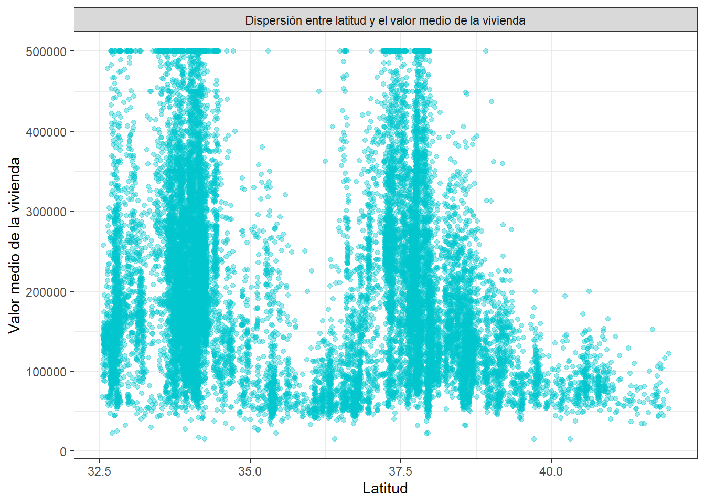
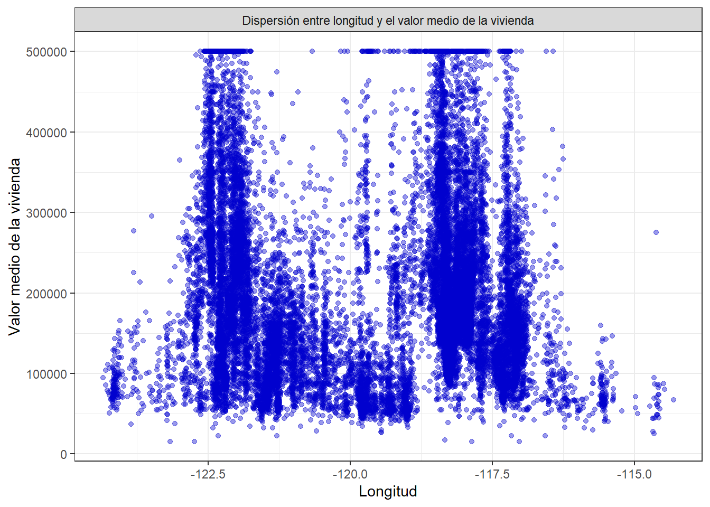
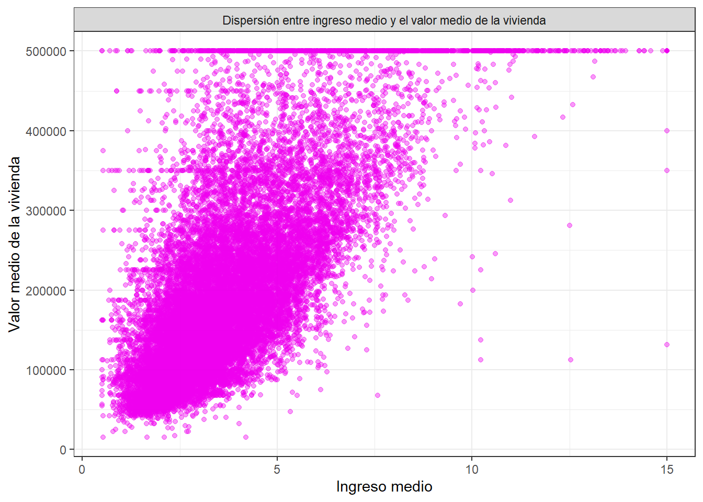
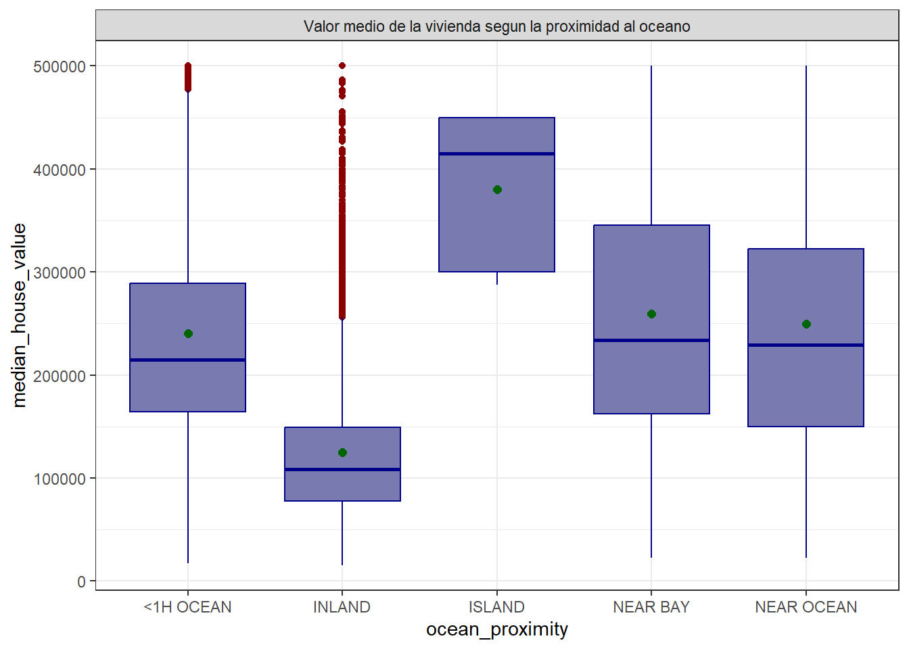

Chapter 6 Ingeniería de Caracterización (feature engineering)
La ingeniería de características (feature engineering) es el proceso de crear nuevas variables a partir de las que ya tenemos, con el fin de que representen mejor la información del dataset. Esto es útil porque, como se vio en la sección anterior, varias variables (total_rooms, total_bedrooms, population y households) se mueven de forma muy parecida entre sí, ya que en el fondo todas miden el tamaño del bloque censal desde distintos ángulos. Usarlas tal cual en un modelo puede generar redundancia, así que en este caso la vamos a utilizar para crear variables de razón (ratios) que combinen esta información y que aporten un dato más claro, como por ejemplo cuántas habitaciones tiene un hogar en promedio, en lugar de manejar los totales por separado.
6.1 Graficos de variables para realizar la “Ingenieria de caracterizacion”
Elegimos estas gráficas guiándonos por lo que se observó en las 36 gráficas de la sección anterior, donde se comparó cada variable independiente con respecto a las demás. De alli seleccionamos las relaciones que mostraban el patrón más marcado entre sí (total_bedrooms, total_rooms, households y population, entre otras), ya que son las que presentan mayor riesgo de estar midiendo lo mismo. Esto nos sirve como base para justificar por qué vamos a crear variables nuevas en lugar de usar los totales originales.
# ---'total_bedrooms' vs 'households'---
g1<- df %>%
ggplot(aes(x = total_bedrooms, y = households)) +
geom_point(alpha = 0.3, color = 'purple') +
labs(x = 'Total de dormitorios',
y = 'Unidades Familiares/domesticas',
title = "'total_bedrooms' vs 'households'") +
theme_bw()
# ---'total_rooms' vs 'total_bedrooms'---
g2 <- df %>%
ggplot(aes(x =total_rooms , y = total_bedrooms )) +
geom_point(alpha = 0.3, color = 'darkblue') +
labs(x = 'Total de habitaciones',
y = 'Total de dormitorios',
title = " 'total_rooms' vs 'total_bedrooms' ") +
theme_bw()
# ---'households' vs 'population' ---
g3 <- df %>%
ggplot(aes(x = households , y = population )) +
geom_point(alpha = 0.3, color = 'gold3') +
labs(x = 'Unidades familiares/domésticas',
y = 'Población total por bloque censado',
title = "'households' vs 'totalbedrooms' ") +
theme_bw()
# ---'total_rooms' vs 'households'---
g4 <- df %>%
ggplot(aes(x = total_rooms , y = households )) +
geom_point(alpha = 0.3, color = 'darkgreen') +
labs(x = 'Cantidad de habitaciones',
y = 'Unidades familiares',
title = " 'total_rooms' vs 'households' ") +
theme_bw()
# ---'total_bedrooms' vs 'population'---
g5 <- df %>%
ggplot(aes(x =total_bedrooms , y = population)) +
geom_point(alpha = 0.3, color = 'darkorange') +
labs(x = 'Cantidad de dormitorios',
y = 'Poblacion censada',
title = " 'total_bedrooms' vs 'population' ") +
theme_bw()
# ---'total_rooms' vs 'population'---
g6 <- df %>%
ggplot(aes(x=total_rooms,y=population))+
geom_point(alpha=0.3, color='brown')+
labs(x='Cantidad de habitaciones',y='Poblacion censada', tittle="'total_rooms' vs 'population'")+
theme_bw()Veamos:

total_bedrooms vs households:
De la grafica podemos observar que la cercania de los puntos pueden llegar a formar una linea recta. Sin embargo, también se debe recalcar el pequeño conjunto de puntos apilados verticalmente entre los 500-750 dormitorios. Podemos decir que este diagrama de dispersión nos señala que la relación es notoriamente creciente.
total_rooms vs total_bedrooms:
Acá también se aprecia una tendencia ascendente clara, aunque los puntos ya no se ajustan tanto a la línea como en el caso anterior; se van dispersando más a medida que aumentan los valores, formando algo así como un abanico. De todas formas, la tendencia de fondo se mantiene: a más habitaciones en total, más dormitorios, lo cual es coherente ya que los dormitorios forman parte de esas habitaciones.

households vs population:
La gráfica muestra una tendencia ascendente, aunque con más dispersión que en g1, los puntos se van alejando de la línea conforme aumentan los valores, y se distinguen un par de casos que se despegan bastante del patrón general (bloques con una población muy alta en relación a su cantidad de hogares, cerca de los 30,000-35,000). Aun con eso, se mantiene la idea de que a más hogares corresponde mayor población.
total_rooms vs households:
En este grafico la tendencia es ascendente, pero la dispersión aumenta hacia los valores más altos. Esto va en línea con lo esperado, ya que un mayor número de hogares suele venir acompañado de un mayor número de habitaciones en total, siguiendo el mismo patrón de “tamaño del bloque” que se ha visto en las variables anteriores.

total_bedrooms vs population:
Se observa una tendencia ascendente, con un comportamiento similar al de g3 y g4 en cuanto a la dispersión creciente, además de algunos valores atípicos aislados en la parte superior (bloques con una población considerablemente alta respecto a su cantidad de dormitorios). En términos generales, la tendencia sigue apuntando a que más dormitorios se asocian con mayor población.
total_rooms vs population:
Esta grafica muestra la dispersión aumentando de forma más notoria en los valores altos y un par de outliers que se alejan bastante de la línea (puntos con población cercana a los 30,000-35,000). Esto confirma que esta variable también sigue el mismo patrón de tamaño y densidad del bloque censal, aunque en este caso la relación se ve algo menos ajustada que en g1.
6.2 Realizamos el procedimiento de ingenieria de caracterizacion
Elegimos estas variables para realizar este procedimiento debido a que son aquellas que probablemente nos esten mostrando la misma información. Por ejemplo, no se escogimos ‘total_bedrooms’ vs ‘population’ por la sencilla razón que es la misma informacion que obtenemos con ‘total_rooms’ vs ‘population’. De esta manera obtenemos 5 variables nuevas:
df_nuevo <- df %>%
mutate(
bedroom_ratio = total_bedrooms / total_rooms, #proporcion de dormitorios sobre la cantidad de habitaciones
rooms_per_household = total_rooms / households, #habitaciones promedio por hogar (tamaño de vivienda)
population_per_household = population / households, #promedio de personas por hogar
population_per_room = population / total_rooms, #densidad de personas por habitación (hacinamiento)
bedrooms_per_household = total_bedrooms / households) #dormitorios promedio por hogar6.3 Analisis exploratorio (EDA) con el nuevo data frame obtenido
6.3.1 Revisar que se crearon correctamente:
| Variable | Tipo de dato | Primeros valores |
|---|---|---|
| longitude | numeric | -122.23, -122.22, -122.24 |
| latitude | numeric | 37.88, 37.86, 37.85 |
| housing_median_age | numeric | 41, 21, 52 |
| total_rooms | numeric | 880, 7099, 1467 |
| total_bedrooms | numeric | 129, 1106, 190 |
| population | numeric | 322, 2401, 496 |
| households | numeric | 126, 1138, 177 |
| median_income | numeric | 8.3252, 8.3014, 7.2574 |
| median_house_value | numeric | 452600, 358500, 352100 |
| ocean_proximity | factor | NEAR BAY, NEAR BAY, NEAR BAY |
| bedroom_ratio | numeric | 0.146590909090909, 0.155796591069165, 0.129516019086571 |
| rooms_per_household | numeric | 6.98412698412698, 6.23813708260105, 8.28813559322034 |
| population_per_household | numeric | 2.55555555555556, 2.10984182776801, 2.80225988700565 |
| population_per_room | numeric | 0.365909090909091, 0.338216650232427, 0.338104976141786 |
| bedrooms_per_household | numeric | 1.02380952380952, 0.971880492091388, 1.07344632768362 |
6.3.2 Revisamos si hay datos faltantes nuevamente:
df_nuevo %>%
summarise(across(everything(), ~ sum(is.na(.)),.names="NA_{.col}")) %>%
kable(caption = " Verificar exito del data frame nuevo") %>%
kable_styling(bootstrap_options = c("striped", "hover", "condensed"),
full_width = TRUE) %>%
scroll_box(width = "100%")| NA_longitude | NA_latitude | NA_housing_median_age | NA_total_rooms | NA_total_bedrooms | NA_population | NA_households | NA_median_income | NA_median_house_value | NA_ocean_proximity | NA_bedroom_ratio | NA_rooms_per_household | NA_population_per_household | NA_population_per_room | NA_bedrooms_per_household |
|---|---|---|---|---|---|---|---|---|---|---|---|---|---|---|
| 0 | 0 | 0 | 0 | 0 | 0 | 0 | 0 | 0 | 0 | 0 | 0 | 0 | 0 | 0 |
6.3.3 Realizamos el resumen estadistico
df_nuevo %>%
select(median_house_value, median_income, latitude, longitude, ocean_proximity, housing_median_age, rooms_per_household, bedrooms_per_household, bedroom_ratio, population_per_household, population_per_room) %>%
summary() %>%
kable(caption = " Dataset luego de realizar feature engineering") %>%
kable_styling(bootstrap_options = c("striped", "hover", "condensed"),
full_width = TRUE) %>%
scroll_box(width = "100%")| median_house_value | median_income | latitude | longitude | ocean_proximity | housing_median_age | rooms_per_household | bedrooms_per_household | bedroom_ratio | population_per_household | population_per_room | |
|---|---|---|---|---|---|---|---|---|---|---|---|
| Min. : 14999 | Min. : 0.4999 | Min. :32.54 | Min. :-124.3 | <1H OCEAN :9136 | Min. : 1.00 | Min. : 0.8462 | Min. : 0.1499 | Min. :0.04594 | Min. : 0.6923 | Min. : 0.01811 | |
| 1st Qu.:119600 | 1st Qu.: 2.5634 | 1st Qu.:33.93 | 1st Qu.:-121.8 | INLAND :6551 | 1st Qu.:18.00 | 1st Qu.: 4.4407 | 1st Qu.: 1.0059 | 1st Qu.:0.17536 | 1st Qu.: 2.4297 | 1st Qu.: 0.43552 | |
| Median :179700 | Median : 3.5348 | Median :34.26 | Median :-118.5 | ISLAND : 5 | Median :29.00 | Median : 5.2291 | Median : 1.0491 | Median :0.20331 | Median : 2.8181 | Median : 0.51601 | |
| Mean :206856 | Mean : 3.8707 | Mean :35.63 | Mean :-119.6 | NEAR BAY :2290 | Mean :28.64 | Mean : 5.4290 | Mean : 1.1044 | Mean :0.21448 | Mean : 3.0707 | Mean : 0.61958 | |
| 3rd Qu.:264725 | 3rd Qu.: 4.7432 | 3rd Qu.:37.71 | 3rd Qu.:-118.0 | NEAR OCEAN:2658 | 3rd Qu.:37.00 | 3rd Qu.: 6.0524 | 3rd Qu.: 1.1004 | 3rd Qu.:0.24026 | 3rd Qu.: 3.2823 | 3rd Qu.: 0.65687 | |
| Max. :500001 | Max. :15.0001 | Max. :41.95 | Max. :-114.3 | NA | Max. :52.00 | Max. :141.9091 | Max. :34.0667 | Max. :3.49267 | Max. :1243.3333 | Max. :392.63158 |
6.4 Veamos los graficos de cada variable de nuestro data frame nuevo, incluyendo las variables que no fueron eliminadas.


-1.png)
Median_house_value:
El valor mediano de las viviendas es de $179.700, mientras que la media es de $206.856, lo que evidencia una asimetría positiva (0,978). El 50% de los valores se encuentra entre $119.600 y $264.725, con una variación considerable en los precios.
-housing_median_age:
Media 28.6 y mediana 29, prácticamente iguales. Esto ya nos dice que la distribución es bastante simétrica, sin inclinarse mucho hacia edades muy altas ni muy bajas.
-latitude:
Es una variable geográfica, no económica. El sd de 2.13 solo nos habla del rango de ubicación que cubren los datos, no hay que interpretarlo como asimetría o dispersión de un fenómeno real.
-longitude:
Igual que la latitud, es una coordenada. Su dispersión (sd 2.0) muestra el rango geográfico del estudio, no algo estadístico relevante en sí mismo.
-median_income:
Media 3.87 y mediana 3.53, bastante cercanas, o sea que la distribución es más o menos simétrica, aunque con una leve inclinación hacia valores más altos.
-rooms_per_household:
Media de 5.43 y mediana de 5.23, bastante cercanas. Esto indica una distribución relativamente equilibrada, aunque existen algunos hogares con valores muy altos.
-bedrooms_per_household:
Media de 1.10 y mediana de 1.05, valores muy similares. La distribución presenta poca asimetría, con algunos valores extremos.
-bedroom_ratio:
Media de 0.214 y mediana de 0.203, bastante cercanas. Esto indica que los dormitorios representan aproximadamente el 21 % de las habitaciones, con una ligera asimetría positiva.
-population_per_household:
Media de 3.07 y mediana de 2.82. La diferencia muestra una asimetría positiva, debido a algunos valores extremadamente altos.
population_per_room:
Media de 0.620 y mediana de 0.516. La media está por encima de la mediana, indicando asimetría positiva y presencia de valores extremos.
Ocean_proximity:
La mayoría de las viviendas están ubicadas a menos de una hora del océano (44,3%), seguida de las viviendas que están tierra adentro (31,7%). Las viviendas cerca del océano representan 12,9% y las cercanas a la bahía 11,1%. Por último, las ubicadas en islas son muy pocas, con apenas 0,02%.
6.5 Verificar el éxito de la ingenieria de caracterizacion
Comparamos las nuevas variables con respecto a nuestra variable respuesta ‘median_house_value’
6.5.1 Diagramas de dispersión de las nuevas variables vs ‘median_house_value’
Relación entre variables ‘rooms_per_household’ y ‘median_house_value’
p_1<- df_nuevo %>%
ggplot(aes(x=rooms_per_household,y=median_house_value))+
geom_point(alpha=0.4, color='springgreen4')+
labs(x='Habitaciones promedio por hogar',y='Valor medio de la vivienda')+
facet_grid(.~'Dispersion entre el promedio de habitaciones por hogar con respecto al valor de la vivienda ')+
theme_bw()
p_1
Al revisar el resumen estadístico derooms_per_household se confirma lo
que se veía en la gráfica, la mitad de los datos está entre 4.4 y 6
habitaciones promedio por hogar, y la media (5.43) y la mediana (5.23)
están bastante cerca, así que el comportamiento normal es bien estable. Sin
embargo, el máximo (141.9) está muy lejos de ese rango, lo que confirma que
hay outliers extremos, y probablemente son esos los que están inflando la
tendencia en el gráfico de dispersión.
Relación entre variables ‘bedrooms_per_household’ y ‘median_house_value’
p_2<- df_nuevo %>%
ggplot(aes(x=bedrooms_per_household,y=median_house_value))+
geom_point(alpha=0.4, color='goldenrod2')+
labs(x='Dormitorios promedio por hogar',y='Valor medio de la vivienda')+
facet_grid(.~'Dispersion entre el promedio de dormitorios y el valor de la vivienda')+
theme_bw()
p_2
La mayoría de los puntos están entre 0 y 5 en el eje X, con una fila pegada arriba cerca de 500,000 (el mismo tope visto antes). Desde allí hasta arriba casi no hay datos, solo unos pocos puntos sueltos (atípicos) hasta 30-34. La nube de dispersion va bajando hasta valores negativos, lo cual no tiene sentido real para el precio de una vivienda, así que esa parte de la forma la están empujando muy pocos puntos extremos y no el comportamiento general de los datos.Relación entre variables ‘bedroom_ratio’ y ‘median_house_value’
p_3<- df_nuevo %>%
ggplot(aes(x=bedroom_ratio,y=median_house_value))+
geom_point(alpha=0.4, color='mediumorchid3')+
labs(x='Proporción de dormitorios sobre habitaciones',y='Valor medio de la vivienda')+
facet_grid(.~'Dispersion entre la proporcion de dormitorios en el hogar y el valor de la vivienda')+
theme_bw()
p_3
En esta gráfica casi todo se concentra entre 0 y 0.5 en el eje X, y de ahí en adelante los datos prácticamente desaparecen, quedando solo unos pocos puntos aislados hasta 3.5. A diferencia de las anteriores, acá no hay una fila de puntos pegada arriba en el tope de 500,000, sino que la nube se ve más dispersa en distintos valores de vivienda y termina en valores negativos, algo que no es posible en la realidad.Relación entre variables ‘population_per_household’ y ‘median_house_value’
p_4<-df_nuevo %>%
ggplot(aes(x=population_per_household,y=median_house_value))+
geom_point(alpha=0.4, color='darkblue')+
labs(x='Promedio de habitantes por hogar',y='Valor medio de la vivienda')+
facet_grid(.~'Dispersion entre el promedio de habitantes y el valor de la vivienda')+
theme_bw()
p_4
Casi todos los puntos están pegados al 0 en el eje X, formando una franja vertical densa, y solo hay unos cuantos puntos sueltos hasta 1200.Relación entre variables ‘population_per_room’ y ‘median_house_value’
p_5<- df_nuevo %>%
ggplot(aes(x=population_per_room,y=median_house_value))+
geom_point(alpha=0.4, color='lightsalmon')+
labs(x='Densidad de personas por habitación',y='Valor medio de la vivienda')+
facet_grid(.~'Dispersion entre el hacinamiento por habitacion y el valor de la vivienda')+
theme_bw()
p_5
Los puntos están pegados al 0 en el eje X, con solo un par de casos aislados que llegan hasta 400. No nos muestra informacion sobre la relacion que existe entre estas dos variables.
Relación entre variables ‘housing_median_age’ y ‘median_house_value’
p_6<- df_nuevo %>%
ggplot(aes(x=housing_median_age,y=median_house_value))+
geom_point(alpha=0.4,color='olivedrab3')+
labs(x='Edad media de la vivienda',y='Valor medio de la vivienda')+
theme_bw()+
facet_grid(.~'Dispersión entre la edad media de la vivienda y el valor medio de la vivienda')
p_6
Los puntos se distribuyen en columnas verticales a lo largo de todo el rango de edad (0 a 50 años), abarcando casi todos los valores de vivienda posibles en cada edad, o sea que no hay una relación clara entre la antigüedad de la vivienda y su valor. También se ve la línea densa en 5e+05, confirmando otra vez el tope de 500,001, y hay una acumulación notable de puntos en la edad 52, probablemente porque esa categoría agrupa “52 años o más”.
Relación entre variables ‘latitude’ y ‘median_house_value’
p_7<- df_nuevo %>%
ggplot(aes(x=latitude,y=median_house_value))+
geom_point(alpha=0.4,color='turquoise3')+
labs(x='Latitud', y='Valor medio de la vivienda')+
theme_bw()+
facet_grid(.~'Dispersión entre latitud y el valor medio de la vivienda')
p_7
Los valores de vivienda no se reparten parejo en todas las latitudes, sino que se concentran en franjas específicas (cerca de 34, 37.5 y en menor medida 33.9), que probablemente corresponden a zonas urbanas importantes de California. También se nota que a partir de la latitud 38 los precios tienden a bajar en general, y se mantiene la línea densa en 5e+05, concentrada sobre todo en esas zonas de mayor densidad (34 y 37.5).
Relación entre variables ‘longitude’ y ‘median_house_value’
p_8<- df_nuevo %>%
ggplot(aes(x=longitude,y=median_house_value))+
geom_point(alpha=0.4,color='blue3')+
labs(x='Longitud',y='Valor medio de la vivienda')+
theme_bw()+
facet_grid(.~'Dispersión entre longitud y el valor medio de la vivienda')
p_8
De igual modo que en el grafico anterior, tampoco se reparten parejo los valores de vivienda por longitud, se concentran en dos franjas principales (cerca de -122.3 y entre -118 y -117), que coinciden con las zonas de alta latitud que vimos antes, así que en conjunto probablemente sean las mismas ciudades importantes (San Francisco y Los Ángeles). Se mantiene otra vez la línea densa en 500,000, concentrada justo en esas dos franjas de mayor densidad urbana, mientras que en longitudes más alejadas (-115) tanto los precios como la cantidad de datos bajan bastante.
Relación entre variables ‘median_income’ y ‘median_house_value’
p_9<- df_nuevo %>%
ggplot(aes(x=median_income,y=median_house_value))+
geom_point(alpha=0.4,color='magenta2')+
labs(x='Ingreso medio',y='Valor medio de la vivienda')+
theme_bw()+
facet_grid(.~'Dispersión entre ingreso medio y el valor medio de la vivienda')
p_9
Se observa una relación positiva y notoria: a medida que sube el ingreso medio, el valor de la vivienda también sube, formando una nube de puntos con una tendencia ascendente bien marcada. Esto sugiere que el ingreso medio es de las variables más importantes para explicar el precio de las viviendas. También se mantiene la línea densa en 500,000 en casi todo el rango de ingresos, o sea que ese límite artificial afecta tanto a viviendas de ingresos bajos como altos.
Relación entre variables ‘ocean_proximity’ y ‘median_house_value’
p_10<- df_nuevo %>%
ggplot(aes(x=ocean_proximity, y=median_house_value))+
geom_boxplot(fill="#797bb0", color="darkblue",outlier.color="darkred")+
stat_summary(fun=mean, geom='point', shape=20, size=3, color="darkgreen")+
facet_grid(.~'Valor medio de la vivienda segun la proximidad al oceano')+
theme_bw()
p_10
Compara el valor de vivienda según qué tan cerca está del océano y se ven diferencias claaras entre categorías. INLAND tiene los precios más bajos y menos dispersión, aunque con varios outliers hacia arriba. ISLAND, a pesar de tener solo 5 registros, tiene la mediana más alta, cerca de los 425,000, aunque no es muy representativa por lo pequeña que es la muestra. Las categorías <1H OCEAN, NEAR BAY y NEAR OCEAN tienen medianas y dispersiones parecidas entre sí, entre 200,000 y 230,000 aproximadamente, lo que sugiere que estar cerca del mar directamente no marca tanta diferencia como la que sí hay entre estar en el interior (INLAND) o no.